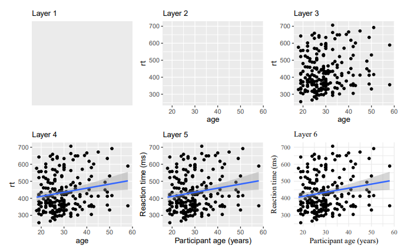

W4_WrangleViz
R Coding Club
RTG 2660
More Data Wrangling & First Visualizations
Warm-up
Who has practiced a bit, and what did you cover?
. . .
Did anyone bring a problem?
{r} #| echo: false} library(tidyverse)
. . .
If I type this code into the console (and run it), I will get the following error. Why?
library(babynames)
dat <- summarise(.data = babynames, mean_n = mean(n))
Error in summarise(.data = babynames, mean_n = mean(n)) : could not find function "summarise". . .
Which function(s) would you use to calculate reaction times per subject?
. . .
How do you merge two data sets?
Valentines Day!
Let’s work with a “romantic” data set today! :D
I found this huge data set on speed dating online, plus it’s codebook. Let’s check it out.
. . .
First, we need to load the data. For this, there are a variety of functions (also for reading in specialized files). Since it is a basic .csv file, we can use `read_data()` (from the tidyverse):
library(tidyverse)
speed_dating <- read_csv("Data/Speed Dating Data.csv")
# check out data structure
str(speed_dating)spc_tbl_ [8,378 × 195] (S3: spec_tbl_df/tbl_df/tbl/data.frame)
$ iid : num [1:8378] 1 1 1 1 1 1 1 1 1 1 ...
$ id : num [1:8378] 1 1 1 1 1 1 1 1 1 1 ...
$ gender : num [1:8378] 0 0 0 0 0 0 0 0 0 0 ...
$ idg : num [1:8378] 1 1 1 1 1 1 1 1 1 1 ...
$ condtn : num [1:8378] 1 1 1 1 1 1 1 1 1 1 ...
$ wave : num [1:8378] 1 1 1 1 1 1 1 1 1 1 ...
$ round : num [1:8378] 10 10 10 10 10 10 10 10 10 10 ...
$ position: num [1:8378] 7 7 7 7 7 7 7 7 7 7 ...
$ positin1: num [1:8378] NA NA NA NA NA NA NA NA NA NA ...
$ order : num [1:8378] 4 3 10 5 7 6 1 2 8 9 ...
$ partner : num [1:8378] 1 2 3 4 5 6 7 8 9 10 ...
$ pid : num [1:8378] 11 12 13 14 15 16 17 18 19 20 ...
$ match : num [1:8378] 0 0 1 1 1 0 0 0 1 0 ...
$ int_corr: num [1:8378] 0.14 0.54 0.16 0.61 0.21 0.25 0.34 0.5 0.28 -0.36 ...
$ samerace: num [1:8378] 0 0 1 0 0 0 0 0 0 0 ...
$ age_o : num [1:8378] 27 22 22 23 24 25 30 27 28 24 ...
$ race_o : num [1:8378] 2 2 4 2 3 2 2 2 2 2 ...
$ pf_o_att: num [1:8378] 35 60 19 30 30 ...
$ pf_o_sin: num [1:8378] 20 0 18 5 10 ...
$ pf_o_int: num [1:8378] 20 0 19 15 20 ...
$ pf_o_fun: num [1:8378] 20 40 18 40 10 ...
$ pf_o_amb: num [1:8378] 0 0 14 5 10 ...
$ pf_o_sha: num [1:8378] 5 0 12 5 20 ...
$ dec_o : num [1:8378] 0 0 1 1 1 1 0 0 1 0 ...
$ attr_o : num [1:8378] 6 7 10 7 8 7 3 6 7 6 ...
$ sinc_o : num [1:8378] 8 8 10 8 7 7 6 7 7 6 ...
$ intel_o : num [1:8378] 8 10 10 9 9 8 7 5 8 6 ...
$ fun_o : num [1:8378] 8 7 10 8 6 8 5 6 8 6 ...
$ amb_o : num [1:8378] 8 7 10 9 9 7 8 8 8 6 ...
$ shar_o : num [1:8378] 6 5 10 8 7 7 7 6 9 6 ...
$ like_o : num [1:8378] 7 8 10 7 8 7 2 7 6.5 6 ...
$ prob_o : num [1:8378] 4 4 10 7 6 6 1 5 8 6 ...
$ met_o : num [1:8378] 2 2 1 2 2 2 2 2 2 2 ...
$ age : num [1:8378] 21 21 21 21 21 21 21 21 21 21 ...
$ field : chr [1:8378] "Law" "Law" "Law" "Law" ...
$ field_cd: num [1:8378] 1 1 1 1 1 1 1 1 1 1 ...
$ undergra: chr [1:8378] NA NA NA NA ...
$ mn_sat : num [1:8378] NA NA NA NA NA NA NA NA NA NA ...
$ tuition : num [1:8378] NA NA NA NA NA NA NA NA NA NA ...
$ race : num [1:8378] 4 4 4 4 4 4 4 4 4 4 ...
$ imprace : num [1:8378] 2 2 2 2 2 2 2 2 2 2 ...
$ imprelig: num [1:8378] 4 4 4 4 4 4 4 4 4 4 ...
$ from : chr [1:8378] "Chicago" "Chicago" "Chicago" "Chicago" ...
$ zipcode : num [1:8378] 60521 60521 60521 60521 60521 ...
$ income : num [1:8378] 69487 69487 69487 69487 69487 ...
$ goal : num [1:8378] 2 2 2 2 2 2 2 2 2 2 ...
$ date : num [1:8378] 7 7 7 7 7 7 7 7 7 7 ...
$ go_out : num [1:8378] 1 1 1 1 1 1 1 1 1 1 ...
$ career : chr [1:8378] "lawyer" "lawyer" "lawyer" "lawyer" ...
$ career_c: num [1:8378] NA NA NA NA NA NA NA NA NA NA ...
$ sports : num [1:8378] 9 9 9 9 9 9 9 9 9 9 ...
$ tvsports: num [1:8378] 2 2 2 2 2 2 2 2 2 2 ...
$ exercise: num [1:8378] 8 8 8 8 8 8 8 8 8 8 ...
$ dining : num [1:8378] 9 9 9 9 9 9 9 9 9 9 ...
$ museums : num [1:8378] 1 1 1 1 1 1 1 1 1 1 ...
$ art : num [1:8378] 1 1 1 1 1 1 1 1 1 1 ...
$ hiking : num [1:8378] 5 5 5 5 5 5 5 5 5 5 ...
$ gaming : num [1:8378] 1 1 1 1 1 1 1 1 1 1 ...
$ clubbing: num [1:8378] 5 5 5 5 5 5 5 5 5 5 ...
$ reading : num [1:8378] 6 6 6 6 6 6 6 6 6 6 ...
$ tv : num [1:8378] 9 9 9 9 9 9 9 9 9 9 ...
$ theater : num [1:8378] 1 1 1 1 1 1 1 1 1 1 ...
$ movies : num [1:8378] 10 10 10 10 10 10 10 10 10 10 ...
$ concerts: num [1:8378] 10 10 10 10 10 10 10 10 10 10 ...
$ music : num [1:8378] 9 9 9 9 9 9 9 9 9 9 ...
$ shopping: num [1:8378] 8 8 8 8 8 8 8 8 8 8 ...
$ yoga : num [1:8378] 1 1 1 1 1 1 1 1 1 1 ...
$ exphappy: num [1:8378] 3 3 3 3 3 3 3 3 3 3 ...
$ expnum : num [1:8378] 2 2 2 2 2 2 2 2 2 2 ...
$ attr1_1 : num [1:8378] 15 15 15 15 15 15 15 15 15 15 ...
$ sinc1_1 : num [1:8378] 20 20 20 20 20 20 20 20 20 20 ...
$ intel1_1: num [1:8378] 20 20 20 20 20 20 20 20 20 20 ...
$ fun1_1 : num [1:8378] 15 15 15 15 15 15 15 15 15 15 ...
$ amb1_1 : num [1:8378] 15 15 15 15 15 15 15 15 15 15 ...
$ shar1_1 : num [1:8378] 15 15 15 15 15 15 15 15 15 15 ...
$ attr4_1 : num [1:8378] NA NA NA NA NA NA NA NA NA NA ...
$ sinc4_1 : num [1:8378] NA NA NA NA NA NA NA NA NA NA ...
$ intel4_1: num [1:8378] NA NA NA NA NA NA NA NA NA NA ...
$ fun4_1 : num [1:8378] NA NA NA NA NA NA NA NA NA NA ...
$ amb4_1 : num [1:8378] NA NA NA NA NA NA NA NA NA NA ...
$ shar4_1 : num [1:8378] NA NA NA NA NA NA NA NA NA NA ...
$ attr2_1 : num [1:8378] 35 35 35 35 35 35 35 35 35 35 ...
$ sinc2_1 : num [1:8378] 20 20 20 20 20 20 20 20 20 20 ...
$ intel2_1: num [1:8378] 15 15 15 15 15 15 15 15 15 15 ...
$ fun2_1 : num [1:8378] 20 20 20 20 20 20 20 20 20 20 ...
$ amb2_1 : num [1:8378] 5 5 5 5 5 5 5 5 5 5 ...
$ shar2_1 : num [1:8378] 5 5 5 5 5 5 5 5 5 5 ...
$ attr3_1 : num [1:8378] 6 6 6 6 6 6 6 6 6 6 ...
$ sinc3_1 : num [1:8378] 8 8 8 8 8 8 8 8 8 8 ...
$ fun3_1 : num [1:8378] 8 8 8 8 8 8 8 8 8 8 ...
$ intel3_1: num [1:8378] 8 8 8 8 8 8 8 8 8 8 ...
$ amb3_1 : num [1:8378] 7 7 7 7 7 7 7 7 7 7 ...
$ attr5_1 : num [1:8378] NA NA NA NA NA NA NA NA NA NA ...
$ sinc5_1 : num [1:8378] NA NA NA NA NA NA NA NA NA NA ...
$ intel5_1: num [1:8378] NA NA NA NA NA NA NA NA NA NA ...
$ fun5_1 : num [1:8378] NA NA NA NA NA NA NA NA NA NA ...
$ amb5_1 : num [1:8378] NA NA NA NA NA NA NA NA NA NA ...
$ dec : num [1:8378] 1 1 1 1 1 0 1 0 1 1 ...
$ attr : num [1:8378] 6 7 5 7 5 4 7 4 7 5 ...
[list output truncated]
- attr(*, "spec")=
.. cols(
.. iid = col_double(),
.. id = col_double(),
.. gender = col_double(),
.. idg = col_double(),
.. condtn = col_double(),
.. wave = col_double(),
.. round = col_double(),
.. position = col_double(),
.. positin1 = col_double(),
.. order = col_double(),
.. partner = col_double(),
.. pid = col_double(),
.. match = col_double(),
.. int_corr = col_double(),
.. samerace = col_double(),
.. age_o = col_double(),
.. race_o = col_double(),
.. pf_o_att = col_double(),
.. pf_o_sin = col_double(),
.. pf_o_int = col_double(),
.. pf_o_fun = col_double(),
.. pf_o_amb = col_double(),
.. pf_o_sha = col_double(),
.. dec_o = col_double(),
.. attr_o = col_double(),
.. sinc_o = col_double(),
.. intel_o = col_double(),
.. fun_o = col_double(),
.. amb_o = col_double(),
.. shar_o = col_double(),
.. like_o = col_double(),
.. prob_o = col_double(),
.. met_o = col_double(),
.. age = col_double(),
.. field = col_character(),
.. field_cd = col_double(),
.. undergra = col_character(),
.. mn_sat = col_number(),
.. tuition = col_number(),
.. race = col_double(),
.. imprace = col_double(),
.. imprelig = col_double(),
.. from = col_character(),
.. zipcode = col_number(),
.. income = col_number(),
.. goal = col_double(),
.. date = col_double(),
.. go_out = col_double(),
.. career = col_character(),
.. career_c = col_double(),
.. sports = col_double(),
.. tvsports = col_double(),
.. exercise = col_double(),
.. dining = col_double(),
.. museums = col_double(),
.. art = col_double(),
.. hiking = col_double(),
.. gaming = col_double(),
.. clubbing = col_double(),
.. reading = col_double(),
.. tv = col_double(),
.. theater = col_double(),
.. movies = col_double(),
.. concerts = col_double(),
.. music = col_double(),
.. shopping = col_double(),
.. yoga = col_double(),
.. exphappy = col_double(),
.. expnum = col_double(),
.. attr1_1 = col_double(),
.. sinc1_1 = col_double(),
.. intel1_1 = col_double(),
.. fun1_1 = col_double(),
.. amb1_1 = col_double(),
.. shar1_1 = col_double(),
.. attr4_1 = col_double(),
.. sinc4_1 = col_double(),
.. intel4_1 = col_double(),
.. fun4_1 = col_double(),
.. amb4_1 = col_double(),
.. shar4_1 = col_double(),
.. attr2_1 = col_double(),
.. sinc2_1 = col_double(),
.. intel2_1 = col_double(),
.. fun2_1 = col_double(),
.. amb2_1 = col_double(),
.. shar2_1 = col_double(),
.. attr3_1 = col_double(),
.. sinc3_1 = col_double(),
.. fun3_1 = col_double(),
.. intel3_1 = col_double(),
.. amb3_1 = col_double(),
.. attr5_1 = col_double(),
.. sinc5_1 = col_double(),
.. intel5_1 = col_double(),
.. fun5_1 = col_double(),
.. amb5_1 = col_double(),
.. dec = col_double(),
.. attr = col_double(),
.. sinc = col_double(),
.. intel = col_double(),
.. fun = col_double(),
.. amb = col_double(),
.. shar = col_double(),
.. like = col_double(),
.. prob = col_double(),
.. met = col_double(),
.. match_es = col_double(),
.. attr1_s = col_double(),
.. sinc1_s = col_double(),
.. intel1_s = col_double(),
.. fun1_s = col_double(),
.. amb1_s = col_double(),
.. shar1_s = col_double(),
.. attr3_s = col_double(),
.. sinc3_s = col_double(),
.. intel3_s = col_double(),
.. fun3_s = col_double(),
.. amb3_s = col_double(),
.. satis_2 = col_double(),
.. length = col_double(),
.. numdat_2 = col_double(),
.. attr7_2 = col_double(),
.. sinc7_2 = col_double(),
.. intel7_2 = col_double(),
.. fun7_2 = col_double(),
.. amb7_2 = col_double(),
.. shar7_2 = col_double(),
.. attr1_2 = col_double(),
.. sinc1_2 = col_double(),
.. intel1_2 = col_double(),
.. fun1_2 = col_double(),
.. amb1_2 = col_double(),
.. shar1_2 = col_double(),
.. attr4_2 = col_double(),
.. sinc4_2 = col_double(),
.. intel4_2 = col_double(),
.. fun4_2 = col_double(),
.. amb4_2 = col_double(),
.. shar4_2 = col_double(),
.. attr2_2 = col_double(),
.. sinc2_2 = col_double(),
.. intel2_2 = col_double(),
.. fun2_2 = col_double(),
.. amb2_2 = col_double(),
.. shar2_2 = col_double(),
.. attr3_2 = col_double(),
.. sinc3_2 = col_double(),
.. intel3_2 = col_double(),
.. fun3_2 = col_double(),
.. amb3_2 = col_double(),
.. attr5_2 = col_double(),
.. sinc5_2 = col_double(),
.. intel5_2 = col_double(),
.. fun5_2 = col_double(),
.. amb5_2 = col_double(),
.. you_call = col_double(),
.. them_cal = col_double(),
.. date_3 = col_double(),
.. numdat_3 = col_double(),
.. num_in_3 = col_double(),
.. attr1_3 = col_double(),
.. sinc1_3 = col_double(),
.. intel1_3 = col_double(),
.. fun1_3 = col_double(),
.. amb1_3 = col_double(),
.. shar1_3 = col_double(),
.. attr7_3 = col_double(),
.. sinc7_3 = col_double(),
.. intel7_3 = col_double(),
.. fun7_3 = col_double(),
.. amb7_3 = col_double(),
.. shar7_3 = col_double(),
.. attr4_3 = col_double(),
.. sinc4_3 = col_double(),
.. intel4_3 = col_double(),
.. fun4_3 = col_double(),
.. amb4_3 = col_double(),
.. shar4_3 = col_double(),
.. attr2_3 = col_double(),
.. sinc2_3 = col_double(),
.. intel2_3 = col_double(),
.. fun2_3 = col_double(),
.. amb2_3 = col_double(),
.. shar2_3 = col_double(),
.. attr3_3 = col_double(),
.. sinc3_3 = col_double(),
.. intel3_3 = col_double(),
.. fun3_3 = col_double(),
.. amb3_3 = col_double(),
.. attr5_3 = col_double(),
.. sinc5_3 = col_double(),
.. intel5_3 = col_double(),
.. fun5_3 = col_double(),
.. amb5_3 = col_double()
.. )
- attr(*, "problems")=<externalptr> Removing irrelevant columns
We have 195 columns, it’s hard to understand what they mean and have an overview. Let’s have a look at the Codebook and decide which columns we want to keep. What do you find interesting?
. . .
speed_dating2 <- speed_dating %>%
select(iid, gender, condtn, wave, round, pid, match, int_corr, age, age_o, dec_o, field_cd, goal, sports, dining, art, attr1_1, sinc1_1, intel1_1, fun1_1, amb1_1, shar1_1, attr1_2, sinc1_2, intel1_2, fun1_2, amb1_2, shar1_2, attr1_3, sinc1_3, intel1_3, fun1_3, amb1_3, shar1_3, attr7_2, sinc7_2, intel7_2, fun7_2, amb7_2, shar7_2, attr7_3, sinc7_3, intel7_3, fun7_3, amb7_3, shar7_3)Renaming columns
These column names might not be very helpful to remember what the names stand for. If you want to, try to change the names of a few of these columns!
. . .
You could do that while selecting the columns already, but afterwards also works:
speed_dating2 <- speed_dating2 %>%
rename(partner_iid = pid)Is this data frame in a tidy format?
Tidy data: Data that is easily processed by tidyverse functions (and often the required format for statistical analyses and data visualizations).
Three principles:
Each variable has its own column.
Each observation has its own row.
Each value has its own cell.
. . .
Wide vs. long format data?
Wide format: Each participant/animal… has one row, observations per participant are in columns.
Long format: Each observation = own row. (Likely several rows per participant: Trials etc.)
| ID | Time_1 | Time_2 |
|---|---|---|
| a1 | 230 | 310 |
| a2 | 195 | 220 |
| a3 | 245 | 290 |
| ID | Time | Value |
|---|---|---|
| a1 | 1 | 230 |
| a1 | 2 | 310 |
| a2 | 1 | 195 |
| a3 | 2 | 220 |
| a3 | 1 | 245 |
| a3 | 2 | 290 |
Data often does not come in this format but is rather messy! That’s why we wrangle.
Tidy data is in between wide and long (you can always go longer! :D)
Tidy Data 2
What do you think, which of the following data sets is tidy?
# A tibble: 6 × 4
country year cases population
<chr> <dbl> <dbl> <dbl>
1 Afghanistan 1999 745 19987071
2 Afghanistan 2000 2666 20595360
3 Brazil 1999 37737 172006362
4 Brazil 2000 80488 174504898
5 China 1999 212258 1272915272
6 China 2000 213766 1280428583# A tibble: 12 × 4
country year type count
<chr> <dbl> <chr> <dbl>
1 Afghanistan 1999 cases 745
2 Afghanistan 1999 population 19987071
3 Afghanistan 2000 cases 2666
4 Afghanistan 2000 population 20595360
5 Brazil 1999 cases 37737
6 Brazil 1999 population 172006362
7 Brazil 2000 cases 80488
8 Brazil 2000 population 174504898
9 China 1999 cases 212258
10 China 1999 population 1272915272
11 China 2000 cases 213766
12 China 2000 population 1280428583# A tibble: 6 × 3
country year rate
<chr> <dbl> <chr>
1 Afghanistan 1999 745/19987071
2 Afghanistan 2000 2666/20595360
3 Brazil 1999 37737/172006362
4 Brazil 2000 80488/174504898
5 China 1999 212258/1272915272
6 China 2000 213766/1280428583# A tibble: 3 × 5
country `1999_cases` `2000_cases` `1999_population` `2000_population`
<chr> <dbl> <dbl> <dbl> <dbl>
1 Afghanistan 745 2666 19987071 20595360
2 Brazil 37737 80488 172006362 174504898
3 China 212258 213766 1272915272 1280428583Tidying the speed dating data
If you selected columns that represent different time points (e.g. attr1_1 to attr1_3), you’d have repeated measures that you’d want to have in long format. How do you reshape the data?
. . .
sd_long1 <- speed_dating2 %>%
pivot_longer(cols = starts_with("attr1"), names_to = "timepoint", values_to = "attractive")
# do it for several columns
sd_long2 <- speed_dating2 %>%
pivot_longer(cols = starts_with(c("attr1", "fun1", "intel1", "amb1", "shar1", "sinc1")), names_to = c(".value", "timepoint"), names_sep = "_")
# or you could do it separately as above and then join the datasets! Good for practicing joins! :)Calculating the average ratings
We might want to calculate the average of the ratings, e.g. attractiveness across time points.
First of all, unfortunately the ratings are on different scales between waves:
Waves 6-9: Please rate the importance of the following attributes in a potential date on a scale of 1-10 (1=not at all important, 10=extremely important):
Waves 1-5, 10-21: You have 100 points to distribute among the following attributes – give more points to those attributes that are more important in a potential date, and fewer points to those attributes that are less important in a potential date. Total points must equal 100.
Bring these ratings on scales that are somewhat comparable!
. . .
Now calculate the average ratings across time points per speed dater.
We can either do so before bringing it in long format using `mutate()` or afterwards using group_by() and summarise().
Filtering the speed daters
Make a new data frame that only consists of female speed daters! Also filter out those where the partner is older than the speed dater.
Sort the data frame
Sort the data frame based on the correlation between the interests, from highest to lowest.
Visualize!
Small Intro –> Visualization Slides!
. . .
Why should we visualize our data?
check whether data make sense (unusual observations?)
honestly present the data
check whether data fits the assumptions of statistical tests
. . .
It’s fun! (And plots are probably the most important information in papers!)
ggplot
We will use a package called ggplot2 (which is part of the tidyverse). ggplot2 is a very versatile package and allows us to make beautiful, publication ready figures.
The main function to “start” plotting is ggplot() - we will then add layers of data and layers to tweak the appearance.

What do we want to plot?
How about attractiveness ratings over time? Or gender distribution?
What kind of plot do we need/how can we visualize it best?
. . .
Let’s start with a simple bar chart of the gender distribution (counts)!
The First Layer
The first line (or layer) sets up the base of the graph: the data to use and the aesthetics (what will go on the x and y axis, how the plot will be grouped).
aes()can take both anxandyargument, however, with a bar chart you are just asking R to count the number of data points in each group so you don’t need to specify this.
ggplot(sd_long2, aes(x = gender)) # obviously don't use the filtered data The Second Layer
The next layer adds a geom or a shape, in this case we use geom_bar() as we want to draw a bar plot.
- Note that we are adding layers, using a
+between layers. This is a very important difference between pipes and visualization.

. . .
Adding
fillto the first layer will separate the data into each level of the grouping variable and give it a different colour. In this case, there is a different coloured bar for each level ofgender.We can get rid of the (in this case redundant legend) with
show.legend = FALSE.
The Next Layers - Improving the Plot
We might want to make the plot a bit prettier and easier to read. What would you improve?
. . .
We might want to add better axis labels and change the colors of the bars. We can do so with the functions scale_x_discrete() and scale_y_continuous(), which will adjust the x and y axes.
We will use these two arguments in those functions:
namecontrols/overwrites the axis name (e.g. Groups)labelscontrols the break points on the axis, i.e. what are the conditions called? The order is important here!
ggplot(sd_long2, aes(x = gender, fill=gender)) +
geom_bar(show.legend = FALSE) +
scale_x_discrete(name = "Gender",
labels = c("Female", "Male")) + # make sure this is correct
scale_y_continuous(name = "Number of speed daters")There’s also the counterparts scale_x_continuous() and scale_y_discrete(). What do you think, why do we use the ones mentioned above and when would we use the other ones?
Themes: Changing the Appearance
There are a number of built-in themes that you can use to change the appearance (background, whether axes are shown etc.), but you can also tweak the themes further manually.
We will now change the default theme to theme_minimal(), but you can also try other themes (just type “theme_” and see what the autocomplete brings up).
Colors
There are various ways to change the colors of the bars. You can manually indicate the colors you want to use but you can also easily use pre-determined color palettes that are already checked for color-blind friendliness.
A popular palette is viridis. We can simply add a function/layer to your ggplot named scale_fill_viridis_d() (d for discrete). The function hast 5 color options (A - E).
- Type and run the below code into a new code chunk. Try changing the option to either A, B, C or D and see which one you like!

Transparency
You can also add transparency to your plot, which can be helpful if you plot several layers of data.
To do so, you can simply add alpha to the geom_bar():